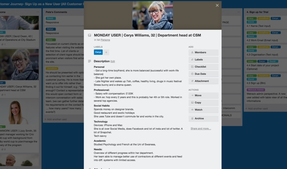

WeTrack is a task management software for large events. Clients incl. Expo2020 Dubai, ICC Cricket World Cup 2019, Royal Ascot, Farnborough Air Show, Secret Garden Party, etc.
PROBLEM
WeTrack completed a system redesign in July 2017 which has dramatically improved user experience of the platform reducing the customer support time. However, they acquire all of their customers through word of mouth. The platform still lack an intuitive onboarding process to make it scalable.
MY TASKS
As part of the onboarding journey we decided to focus on the following tasks:
Redesigning the landing page: Design a customer centric responsive website that would also reflect WeTrack’s brand through appealing visuals, clear CTA’s, concise messaging and analytics to measure KPIs
Automating the onboarding process: Design a self-explanatory onboarding process that would allow the customers to set-up free trials and explore the product without sales support.
Managing different profiles with single login: If a user is part of different events, allow the user to access and manage different profiles.
DESIGN
The process included discovery workshop, talking to users, design workshop, designing, testing.
Discovery Workshop: I did a discovery workshop to understand more about their business, user and aspirations. Due to circumstances the workshop was conducted remotely. This made me explore new tools and ways to conduct the workshop. I wrote an article on how to do remote discovery sessions.
Understanding the business To understand the business I ran through some of the critical bits of the business model canvas (BMC). As someone with limited knowledge on the industry, this quickly provided me with the necessary understanding about the customer segment (primary and secondary customers), the value they provide, the revenue they get in return, the channels and customer relationship they maintain, and the Competitors Landscape. For this I used Google hangouts, with Google docs shared in a huge monitor.
Figure 2: Understanding the Business (Tool: Google Slides)
Understanding the users We then created persona and empathy map for different customer segments to understand the users and build empathy towards them.

Figure 3: Understanding the Users (Tool: Trello to built Persona for at least one user from each customer segment )

Figure 4: Customer Journey (Tool: Trello for Customer journey for each persona)
USER INTERVIEWS
Based on the personas, we mapped out different possible customer journeys. We did this in Trello.
WeTrack built a loyal customer base with their customer centric product who often gives feedback in their product roadmap. They pulled in some of the big names as listed previously such as Expo2020 Dubai, ICC Cricket World Cup 2019 etc.
I managed to interview few of their word of mouth users to understand how they generally add a new software to their workflow.
Findings from the interviews: Usually hear about a new software through Google (such as 10 best event management app articles); get a lot of recommendation from their network.
At the later stage, the user interactions helped me in creating the customer journey.
We did a detailed design session of each sketch of the customer journey such as landing page, sign ups, pricing etc. along with high-level contents.

After gathering all of this information, I created wireframes with touchpoints on various persona to see how each persona would interact with the journey. These wireframes were critically discussed with the team with quick iterations and then evaluated with users.

In the next step, I took time to know the WeTrack branding (Colours, Logo, Fonts, product screenshots etc. ) and tone of voice, I did mock-ups of the wireframes.
I did a user evaluation based on 3 tasks with their word of mouth users to test the mockup.
Finally I worked on hi-fidelity mockups (UI) including responsive design. Specifications for developers with proper asset and copy through invision, as well as SEO optimisation tips image size, keywords, content etc…